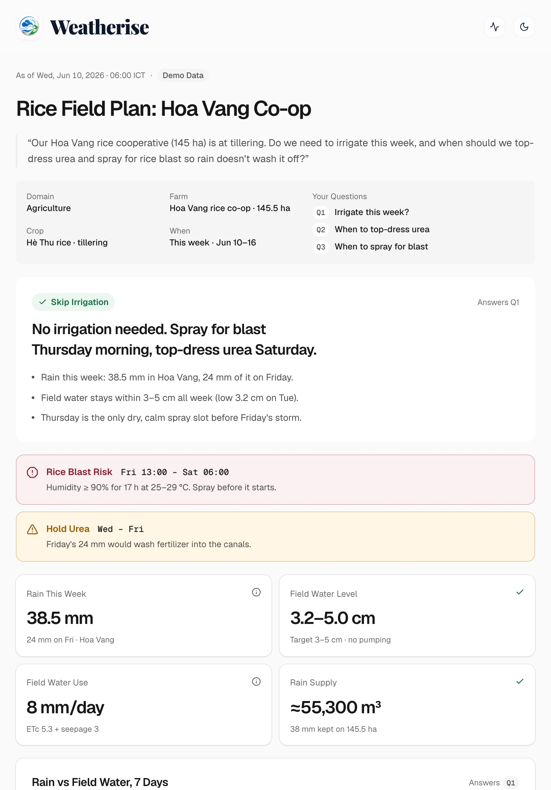
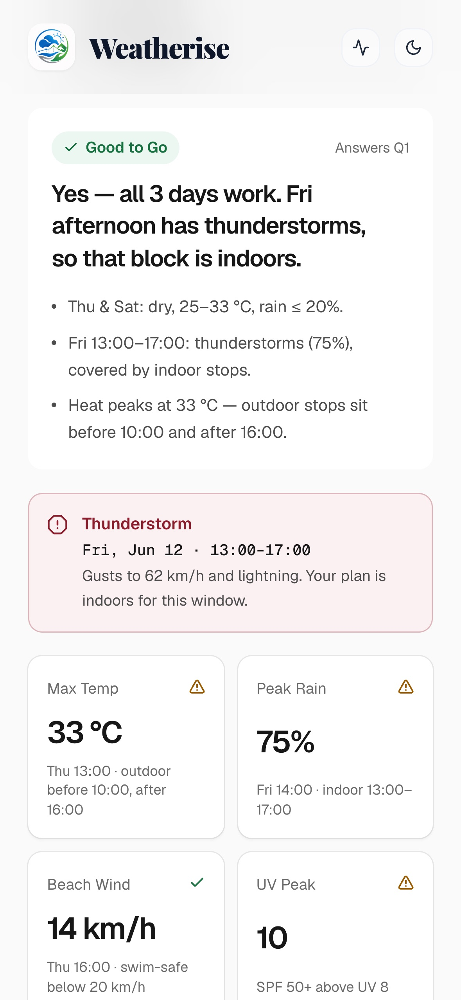

<!doctype html>
<html lang="en">
<head>
<meta charset="utf-8" />
<title>Weatherise — Trailer</title>
<style>
  /* Landing tokens (DESIGN.md): white canvas, ink type, blue → green brand, light orange accent. 1920×1080 stage. */
  :root {
    --ink: #101010; --smoke: #6e6e73; --pewter: #ababb0; --snow: #f5f5f7; --mist: #f0f0f0;
    --blue: #0088ff; --teal: #12a7c6; --green: #34c759; --orange: #f06413; --alert: #8a1c2b;
    --brand: linear-gradient(90deg, #0088ff 0%, #12a7c6 55%, #34c759 100%);
  }
  * { box-sizing: border-box; margin: 0; padding: 0; }
  html, body { width: 1920px; height: 1080px; overflow: hidden; background: #fff; }
  body { font-family: system-ui, -apple-system, "SF Pro Display", sans-serif; color: var(--ink); -webkit-font-smoothing: antialiased; }
  #stage { position: relative; width: 1920px; height: 1080px; overflow: hidden; background: #fff; }
  .layer { position: absolute; inset: 0; will-change: transform, opacity; }
  .center { display: flex; align-items: center; justify-content: center; flex-direction: column; text-align: center; }
  .grad { background: var(--brand); -webkit-background-clip: text; background-clip: text; color: transparent; }
  .w { display: inline-block; will-change: transform, opacity, filter; }
  .title { font-weight: 700; letter-spacing: -0.02em; line-height: 1.02; }
  .tnum { font-variant-numeric: tabular-nums; }

  /* Ambient light */
  .blob { position: absolute; border-radius: 50%; opacity: 0; }

  /* Devices (ported from components/landing/Devices.tsx) */
  .mac { position: absolute; transform-origin: 50% 100%; }
  .mac .lid { margin: 0 auto; width: 86%; border-radius: 2.4%/3.6%; padding: 0.22%; background: linear-gradient(180deg,#a5a7ab,#6d6f73 40%,#56585c); }
  .mac .bezel { position: relative; border-radius: 2.2%/3.4%; background: #060607; padding: 1.55% 1.55% 2.2%; }
  .mac .screen { position: relative; overflow: hidden; border-radius: 1.1%/1.7% 1.1%/1.7% 0.4%/0.6% 0.4%/0.6%; background: #fff; aspect-ratio: 1512 / 982; }
  .mac .notch { position: absolute; left: 50%; top: 0; height: 4.1%; width: 11.5%; transform: translateX(-50%); border-radius: 0 0 14%/36% 14%/36%; background: #060607; z-index: 5; }
  .mac .notch i { position: absolute; left: 50%; top: 38%; height: 24%; width: 3.2%; transform: translateX(-50%); border-radius: 50%; background: #1b1d26; }
  .mac .hinge { margin: 0 auto; height: 7px; width: 80%; background: linear-gradient(180deg,#3a3b3e,#141415); }
  .mac .base { position: relative; height: 18px; border-radius: 0 0 2.2%/90% 2.2%/90%; background: linear-gradient(180deg,#f4f5f6 0%,#dadbdd 18%,#c3c5c8 55%,#9c9ea2 82%,#77797d 100%); box-shadow: inset 0 1px 0 rgba(255,255,255,0.9); }
  .mac .scoop { position: absolute; left: 50%; top: 0; height: 52%; width: 15%; transform: translateX(-50%); border-radius: 0 0 18%/100% 18%/100%; background: linear-gradient(180deg,#9fa1a5,#c6c8cb 70%,#d9dadc); }
  .mac .shadow { margin: 6px auto 0; height: 26px; width: 92%; border-radius: 50%; background: radial-gradient(closest-side, rgba(16,16,16,0.22), transparent); filter: blur(3px); }
  .glare { position: absolute; inset: 0; pointer-events: none; z-index: 4; }
  .page { position: absolute; left: 0; top: 0; width: 100%; transform-origin: 0 0; will-change: transform; }
  .page img { display: block; width: 100%; }
  .stack img { position: absolute; left: 0; top: 0; width: 100%; }

  .ipad { position: absolute; }
  .ipad .frame { border-radius: 6.5%/4.6%; padding: 1%; background: linear-gradient(135deg,#e6e7e9,#a7a9ad 30%,#dcdde0 55%,#96989c); box-shadow: 0 30px 60px rgba(16,16,16,0.18); }
  .ipad .bez { border-radius: 5.6%/4%; background: #050506; padding: 4.3%; }
  .ipad .scr { overflow: hidden; border-radius: 2.4%/1.7%; aspect-ratio: 1668/2388; background: #fff; position: relative; }
  .iphone { position: absolute; }
  .iphone .frame { border-radius: 17%/8%; padding: 1.5%; background: linear-gradient(135deg,#e3e3e5,#9fa0a4 22%,#d8d8db 48%,#8e8f93 74%,#c9c9cc); box-shadow: 0 30px 60px rgba(16,16,16,0.22); }
  .iphone .bez { border-radius: 15.6%/7.3%; background: #050506; padding: 3.2%; }
  .iphone .scr { overflow: hidden; border-radius: 13%/6%; aspect-ratio: 1179/2556; background: #fff; position: relative; }
  .iphone .island { position: absolute; left: 50%; top: 1.6%; height: 3.9%; width: 31%; transform: translateX(-50%); border-radius: 99px; background: #000; z-index: 3; }
  .scr img { position: absolute; left: 0; width: 100%; }

  /* Cards */
  .card { position: absolute; background: #fff; border-radius: 22px; box-shadow: 0 0 0 1px rgba(16,16,16,0.06), 0 24px 60px rgba(16,16,16,0.10); }
  .stamp { position: absolute; border: 3px solid var(--orange); color: var(--orange); border-radius: 999px; font-weight: 800; letter-spacing: 0.08em; padding: 8px 22px; font-size: 22px; }
  .code { position: absolute; background: #101010; color: #e5e5ea; border-radius: 26px; font-family: ui-monospace, "SF Mono", Menlo, monospace; box-shadow: 0 30px 70px rgba(16,16,16,0.25); }
  .pill { position: absolute; background: #fff; border-radius: 999px; box-shadow: 0 0 0 1px rgba(16,16,16,0.06), 0 16px 40px rgba(16,16,16,0.10); display: flex; align-items: center; gap: 14px; white-space: nowrap; }
  .dot { width: 14px; height: 14px; border-radius: 50%; }
  .ring { position: absolute; border-radius: 16px; box-shadow: 0 0 0 4px var(--orange), 0 0 0 14px rgba(240,100,19,0.15); pointer-events: none; }
  .label { font-size: 30px; font-weight: 600; color: var(--ink); }
  .sub { font-size: 30px; color: var(--smoke); }

  /* Subtitles */
  #subs { position: absolute; left: 50%; bottom: 46px; transform: translateX(-50%); max-width: 1500px; padding: 12px 26px; border-radius: 14px; background: rgba(16,16,16,0.72); color: #fff; font-size: 32px; font-weight: 500; line-height: 1.3; text-align: center; opacity: 0; z-index: 50; backdrop-filter: blur(10px); }
</style>
</head>
<body>
<div id="stage"></div>
<div id="subs"></div>
<script src="build/timeline.js"></script>
<script>
// ─── Math & easing ──────────────────────────────────────────────────────────
const clamp = (v, a = 0, b = 1) => Math.min(b, Math.max(a, v));
const lerp = (a, b, p) => a + (b - a) * p;
const prog = (t, a, b) => clamp((t - a) / (b - a));
const eOut = (p) => 1 - Math.pow(1 - p, 4);                       // decelerate
const eExpo = (p) => (p >= 1 ? 1 : 1 - Math.pow(2, -10 * p));      // Apple-like snap-settle
const eInOut = (p) => (p < 0.5 ? 16 * p ** 5 : 1 - Math.pow(-2 * p + 2, 5) / 2);
const eIn = (p) => p * p * p;
const spring = (p) => (p <= 0 ? 0 : p >= 1 ? 1 : 1 - Math.exp(-6.5 * p) * Math.cos(8.5 * p));
const win = (t, a, b, fadeIn = 0.4, fadeOut = 0.4) => Math.min(eOut(prog(t, a, a + fadeIn)), 1 - eIn(prog(t, b - fadeOut, b))); // 0→1→0

// ─── Timeline from the voiceover ────────────────────────────────────────────
const TL = window.TIMELINE;
const L = Object.fromEntries(TL.lines.map((l) => [l.id, l]));
const next = (id) => { const i = TL.lines.findIndex((l) => l.id === id); return TL.lines[i + 1] ? TL.lines[i + 1].start : TL.duration; };
/** Approximate when a word inside a line is spoken (by character share). */
const wordAt = (id, word) => { const l = L[id]; const i = l.text.indexOf(word); return l.start + (l.end - l.start) * (i / l.text.length); };
const DUR = TL.duration;

// ─── DOM helpers ────────────────────────────────────────────────────────────
const stage = document.getElementById("stage");
const el = (html, parent = stage) => { const d = document.createElement("div"); d.innerHTML = html.trim(); const n = d.firstChild; parent.appendChild(n); return n; };
const set = (n, o) => { n.style.opacity = o.o ?? 1; n.style.transform = `translate(${o.x ?? 0}px,${o.y ?? 0}px) scale(${o.s ?? 1}) rotate(${o.r ?? 0}deg)`; n.style.filter = o.b ? `blur(${o.b}px)` : "none"; n.style.visibility = (o.o ?? 1) <= 0.001 ? "hidden" : "visible"; };
/** Words that rise, unblur and settle one after another. */
function words(text, cls, style = "") {
  const n = el(`<div class="layer center"><div class="${cls}" style="${style}">${text.split(" ").map((w) => `<span class="w">${w}</span>`).join(" ")}</div></div>`);
  n.ws = [...n.querySelectorAll(".w")];
  return n;
}
function revealWords(n, t, start, per = 0.085, dur = 0.7, out = null) {
  n.ws.forEach((w, i) => {
    const p = eExpo(prog(t, start + i * per, start + i * per + dur));
    set(w, { o: p, y: (1 - p) * 46, b: (1 - p) * 14 });
  });
  if (out) { const q = eIn(prog(t, out[0], out[1])); n.style.opacity = 1 - q; n.style.transform = `translateY(${-q * 40}px) scale(${1 - q * 0.04})`; n.style.filter = q > 0 ? `blur(${q * 10}px)` : "none"; }
}

// ─── Ambient light (blue/green, brand) ─────────────────────────────────────
const blobA = el(`<div class="blob" style="width:1500px;height:1100px;left:-520px;top:-480px;background:radial-gradient(closest-side, rgba(0,136,255,0.13), rgba(0,136,255,0) 100%)"></div>`);
const blobB = el(`<div class="blob" style="width:1500px;height:1100px;right:-560px;bottom:-520px;background:radial-gradient(closest-side, rgba(52,199,89,0.12), rgba(52,199,89,0) 100%)"></div>`);

// ─── Rain (problem act) ────────────────────────────────────────────────────
const rain = el(`<canvas class="layer" width="1920" height="1080"></canvas>`);
const rctx = rain.getContext("2d");
const drops = Array.from({ length: 140 }, (_, i) => ({ x: (i * 97.3) % 1920, y0: (i * 211.7) % 1080, v: 900 + ((i * 37) % 600), len: 26 + ((i * 13) % 34) }));
function drawRain(t, amount) {
  rctx.clearRect(0, 0, 1920, 1080);
  if (amount <= 0.001) return;
  rctx.strokeStyle = `rgba(0,136,255,${0.22 * amount})`; rctx.lineWidth = 2; rctx.lineCap = "round";
  const n = Math.floor(drops.length * amount);
  for (let i = 0; i < n; i++) { const d = drops[i]; const y = ((d.y0 + t * d.v) % 1200) - 60; rctx.beginPath(); rctx.moveTo(d.x, y); rctx.lineTo(d.x - 7, y + d.len); rctx.stroke(); }
}

// ─── Act 0: horizon + falling drop ─────────────────────────────────────────
const horizon = el(`<div style="position:absolute;left:50%;top:600px;height:2px;width:1000px;margin-left:-500px;background:linear-gradient(90deg,transparent,#d0d0d3,transparent);transform-origin:50% 50%"></div>`);
const drop = el(`<div style="position:absolute;left:954px;top:0;width:12px;height:18px;border-radius:50% 50% 50% 50%/60% 60% 40% 40%;background:var(--blue)"></div>`);
const ripple = el(`<div style="position:absolute;left:960px;top:601px;width:20px;height:6px;margin:-3px 0 0 -10px;border-radius:50%;border:2px solid var(--blue)"></div>`);

// ─── Act 1: problem ────────────────────────────────────────────────────────
const p1 = words("Every forecast is a promise.", "title", "font-size:104px");
const p2 = el(`<div class="layer center"><div class="title" style="font-size:118px"><span class="w">In</span> <span class="w">Da</span> <span class="w">Nang,</span> <span class="w" id="itw">it</span> <span class="w" style="position:relative;display:inline-block"><span style="visibility:hidden">breaks.</span><span class="bk top" style="position:absolute;left:0;top:0">breaks.</span><span class="bk bot" style="position:absolute;left:0;top:0">breaks.</span></span></div></div>`);
p2.ws = [...p2.querySelectorAll(".title > .w")];
const bkTop = p2.querySelector(".bk.top"), bkBot = p2.querySelector(".bk.bot");

// Act 1b: 15–40% + cancelled trip cards
const statWrap = el(`<div class="layer"></div>`);
const trips = [["Day 1 · 08:00", "Son Tra Peninsula"], ["Day 2 · 14:00", "Marble Mountains"], ["Day 3 · 09:00", "Hoi An Old Town"]].map(([a, b], i) =>
  el(`<div class="card" style="left:${190 + i * 34}px;top:${300 + i * 150}px;width:620px;height:126px;padding:26px 34px"><div style="font-size:24px;font-weight:600;color:var(--smoke)">${a}</div><div style="font-size:36px;font-weight:700;margin-top:6px">${b}</div><div class="stamp" style="right:30px;top:38px">CANCELLED</div></div>`, statWrap));
const stamps = trips.map((c) => c.querySelector(".stamp"));
const odoBox = el(`<div style="position:absolute;left:1000px;top:330px;width:820px"><div class="title tnum" id="odo" style="font-size:210px;color:var(--orange);letter-spacing:-0.04em;display:flex;align-items:baseline"></div><div class="label" style="margin-top:18px;font-size:34px">of tour bookings cancelled or postponed</div><div class="sub" style="font-size:26px;margin-top:6px">Central Vietnam tour operators, Oct–Nov 2025 · VnExpress</div></div>`, statWrap);
const odo = odoBox.querySelector("#odo");
/** Rolling digits: each digit spins through a column to its target. */
function odometer(host, text, p, stagger = 0.08) {
  if (!host.built || host.built !== text) {
    host.innerHTML = text.split("").map((ch) => /[0-9]/.test(ch)
      ? `<span style="display:inline-block;height:1em;overflow:hidden;line-height:1"><span class="col" style="display:flex;flex-direction:column">${Array.from({ length: 30 }, (_, k) => `<span style="height:1em;line-height:1">${k % 10}</span>`).join("")}</span></span>`
      : `<span class="ch" style="display:inline-block;line-height:1">${ch === " " ? "&nbsp;" : ch}</span>`).join("");
    host.built = text;
  }
  let di = 0;
  [...host.children].forEach((c, i) => {
    const col = c.querySelector(".col");
    if (col) { const d = +text.replace(/[^0-9]/g, "")[di]; const q = eOut(clamp(p * 1.25 - di * stagger)); col.style.transform = `translateY(${-(20 + d) * q}em)`; di++; }
    else { c.style.opacity = clamp(p * 2 - i * 0.05); }
  });
}

// Act 1c: raw numbers, no decision
const apiWrap = el(`<div class="layer"></div>`);
const apiTitle = el(`<div class="layer center" style="justify-content:flex-start;padding-top:150px"><div class="title" style="font-size:76px"><span class="w">Apps tell you the wind.</span> <span class="w" style="color:var(--smoke)">Never what to do.</span></div></div>`, apiWrap);
apiTitle.ws = [...apiTitle.querySelectorAll(".w")];
const api = el(`<div class="code" style="left:330px;top:400px;width:520px;padding:40px 46px;font-size:34px;line-height:1.75"><div style="font-size:22px;color:#8e8e93;margin-bottom:10px">weather_api.json</div><div class="kv"><span style="color:#8ab4f8">gust_kmh</span>: <span style="color:#feab30">62</span></div><div class="kv"><span style="color:#8ab4f8">rain_pct</span>: <span style="color:#feab30">75</span></div><div class="kv"><span style="color:#8ab4f8">temp_c</span>: <span style="color:#feab30">31</span></div><div class="kv"><span style="color:#8ab4f8">humidity</span>: <span style="color:#feab30">84</span></div></div>`, apiWrap);
const kvs = [...api.querySelectorAll(".kv")];
const qs = ["Run the crane?", "Pour concrete today?", "Spray before the rain?"].map((q, i) =>
  el(`<div class="pill" style="left:1040px;top:${430 + i * 120}px;padding:22px 30px 22px 34px;font-size:36px;font-weight:600">${q}<span class="qm" style="display:inline-flex;width:46px;height:46px;border-radius:50%;background:#fff3e8;color:var(--orange);font-weight:800;align-items:center;justify-content:center">?</span></div>`, apiWrap));
const arrow = el(`<div style="position:absolute;left:880px;top:560px;width:130px;height:4px;background:repeating-linear-gradient(90deg,#d0d0d3 0 14px,transparent 14px 26px)"></div>`, apiWrap);

// ─── Act 2: reveal ─────────────────────────────────────────────────────────
const r1 = words("So we built something that doesn't just predict the weather.", "title", "font-size:70px;max-width:1500px;color:var(--ink)");
const r2 = el(`<div class="layer center"><div class="title grad" style="font-size:190px;letter-spacing:-0.045em;padding-bottom:20px">It decides.</div></div>`);
const brand = el(`<div class="layer center" style="justify-content:flex-start;padding-top:96px"><div style="display:flex;align-items:center;gap:22px"><span id="wm" class="title" style="font-size:72px;letter-spacing:-0.03em">Weatherise</span></div></div>`);
const logo = brand.querySelector("#logo"), wm = brand.querySelector("#wm");

// MacBook with the real app inside. Screen = 1512 css px wide page, scaled to fit.
const MAC_W = 1500;
const mac = el(`<div class="mac" style="left:${(1920 - MAC_W) / 2}px;top:0;width:${MAC_W}px">
  <div class="lid"><div class="bezel"><div class="screen" id="screen">
    <div class="page" id="pageHome"><div class="stack" id="homeStack" style="position:relative;aspect-ratio:1512/982"></div></div>
    <div class="page" id="pageCon"></div>
    <div class="page" id="pageTour"></div>
    <div class="glare" id="glare"></div>
  </div><div class="notch"><i></i></div></div></div>
  <div class="hinge"></div><div class="base"><div class="scoop"></div></div><div class="shadow"></div></div>`);
const screen = mac.querySelector("#screen");
const SCR_W = MAC_W * 0.86 * (1 - 0.031) * (1 - 0.0044); // ≈ rendered screen width (px)
const pageHome = mac.querySelector("#pageHome"), pageCon = mac.querySelector("#pageCon"), pageTour = mac.querySelector("#pageTour");
const homeStack = mac.querySelector("#homeStack");
const HOME = ["home", ...Array.from({ length: 14 }, (_, i) => `type-${String(i + 1).padStart(2, "0")}`), "loading-0", "loading-1", "loading-2", "loading-3"];
const homeImgs = HOME.map((n) => { const i = document.createElement("img"); i.src = `ui/${n}.jpg`; i.style.opacity = 0; homeStack.appendChild(i); return i; });
const glare = mac.querySelector("#glare");
const ring = el(`<div class="ring"></div>`, screen);
const ring2 = el(`<div class="ring" style="border-radius:99px"></div>`, screen);

/** Show page `p` scrolled to css-y `y`, zoomed `z` around css point (cx, cy). Units: page css px (1512 wide). */
function cam(page, y, z = 1, cx = 756, cy = null) {
  const k = SCR_W / 1512;                       // css px → screen px
  const vh = 982;                               // visible page height (css)
  const fy = cy ?? y + vh / 2;
  const tx = -(cx * z - 756) * k, ty = -(fy * z - vh / 2) * k;
  page.style.transform = `translate(${tx}px, ${ty}px) scale(${z * k})`;
  page.style.width = "1512px";
}
[pageHome, pageCon, pageTour].forEach((p) => { p.style.width = "1512px"; p.style.transformOrigin = "0 0"; });
const featTitle = el(`<div class="layer center" style="justify-content:flex-start;padding-top:86px"><div class="title" id="ft" style="font-size:62px;letter-spacing:-0.025em"></div></div>`);
const ft = featTitle.querySelector("#ft");

// Act 3b: seven sources become one
const srcWrap = el(`<div class="layer"></div>`);
const SOURCES = [["Open-Meteo", "#0088ff"], ["OpenWeatherMap", "#eb6e4b"], ["WeatherAPI", "#1e88e5"], ["Tomorrow.io", "#6c47ff"], ["Visual Crossing", "#12a7c6"], ["Stormglass", "#34c759"], ["7Timer", "#f06413"]];
const srcPills = SOURCES.map(([n, c], i) => el(`<div class="pill" style="left:0;top:0;padding:20px 30px;font-size:32px;font-weight:600"><span class="dot" style="background:${c}"></span>${n}</div>`, srcWrap));
const consensus = el(`<div class="card" style="left:560px;top:370px;width:800px;padding:44px 52px"><div style="display:flex;justify-content:space-between;align-items:center"><div style="font-size:30px;font-weight:700">One forecast</div><div style="font-size:22px;font-weight:600;color:var(--blue);background:rgba(0,136,255,0.08);padding:8px 16px;border-radius:99px">Nemotron arbiter</div></div><div style="display:flex;gap:70px;margin-top:26px"><div><div class="sub" style="font-size:24px">Rain, Fri 14:00</div><div class="title tnum" style="font-size:86px" id="cR">75%</div></div><div><div class="sub" style="font-size:24px">Peak gust</div><div class="title tnum" style="font-size:86px">62<span style="font-size:40px"> km/h</span></div></div></div><div style="margin-top:26px;display:flex;justify-content:space-between;font-size:24px"><span class="sub" style="font-size:24px">Source agreement</span><b class="tnum" id="agN">94%</b></div><div style="height:12px;border-radius:99px;background:var(--mist);margin-top:10px;overflow:hidden"><div id="agBar" style="height:100%;width:0;border-radius:99px;background:var(--brand)"></div></div></div>`, srcWrap);
const agBar = consensus.querySelector("#agBar");

// Act 3e: three devices
const ipad = el(`<div class="ipad" style="left:300px;top:450px;width:250px"><div class="frame"><div class="bez"><div class="scr"></div></div></div></div>`);
const iphone = el(`<div class="iphone" style="left:1400px;top:430px;width:200px"><div class="frame"><div class="bez"><div class="scr"><div class="island"></div></div></div></div></div>`);
const roles = [["The traveler.", 1500, "traveler"], ["The builder.", 960, "builder"], ["The farmer.", 425, "farmer"]].map(([t, x, k]) => {
  const n = el(`<div style="position:absolute;left:${x}px;top:905px;transform:translateX(-50%);font-size:40px;font-weight:700;letter-spacing:-0.02em;white-space:nowrap">${t}</div>`); n.k = k; return n; });

// ─── Act 4: proof ──────────────────────────────────────────────────────────
const PROOF = [
  { id: "n1", big: "91%", label: "of go / no-go calls match domain experts", sub: "120 scenarios · tourism, construction & agriculture" },
  { id: "n2", big: "4.8 s", label: "to a full decision", sub: "verdict streams in 2.6 s · 8× NVIDIA H200" },
  { id: "n3", big: "0", label: "unsafe go-calls", sub: "the rule engine holds a veto · 212 red-team prompts" },
  { id: "n4", big: "Top 10", label: "Vietnam AI Open Hackathon 2026", sub: "NVIDIA · Viettel · Sovico" },
];
const proofs = PROOF.map((p) => {
  const n = el(`<div class="layer center"><div class="title tnum grad odo" style="font-size:250px;letter-spacing:-0.05em;padding:0 20px 18px;display:flex;align-items:baseline"></div><div class="label" style="font-size:48px;margin-top:6px">${p.label}</div><div class="sub" style="margin-top:10px">${p.sub}</div></div>`);
  n.odo = n.querySelector(".odo"); n.p = p; return n;
});
// Gradient text can't paint through nested digit columns, so digits get the gradient individually.
proofs.forEach((n) => { n.odo.classList.remove("grad"); n.odo.style.color = "var(--ink)"; });

// ─── Act 5: end card ───────────────────────────────────────────────────────
const endBrand = el(`<div class="layer center"><div style="display:flex;align-items:center;gap:30px"><span class="title" id="eWm" style="font-size:132px;letter-spacing:-0.04em">Weatherise</span></div></div>`);
const eLogo = endBrand.querySelector("#eLogo"), eWm = endBrand.querySelector("#eWm");
const tagline = el(`<div class="layer center" style="padding-top:330px"><div class="title" style="font-size:58px;letter-spacing:-0.02em"><span class="w">The</span> <span class="w">best</span> <span class="w">weather</span> <span class="w">is</span> <span class="w">the</span> <span class="w">weather</span> <span class="w">you</span> <span class="w grad">planned</span> <span class="w grad">for.</span></div><div class="sub" id="eFoot" style="font-size:26px;margin-top:38px">github.com/BennedictQuanTon/Weatherise_Vietnam-AI-Open-Hackathon-2026 · Team Weatherise · HCMUT–UTS</div></div>`);
tagline.ws = [...tagline.querySelectorAll(".w")];
const eFoot = tagline.querySelector("#eFoot");

const subs = document.getElementById("subs");
const SHOW_SUBS = new URLSearchParams(location.search).get("subs") === "1";

// ─── Sound cues (picked up by the renderer) ─────────────────────────────────
const CUES = [];
const cue = (t, s, v = 0.6) => CUES.push({ t: +t.toFixed(3), s, v });

// ═══════════════════════════════════════════════════════════════════════════
// Scene times
const S = {
  p1: L.p1.start, p2: L.p2.start, p3: L.p3.start, p4: L.p4.start, r1: L.r1.start, r2: L.r2.start,
  f1: L.f1.start, f2: L.f2.start, f3: L.f3.start, f4: L.f4.start, f5: L.f5.start,
  n1: L.n1.start, n2: L.n2.start, n3: L.n3.start, n4: L.n4.start, e1: L.e1.start, e2: L.e2.start,
};
const breakT = wordAt("p2", "breaks");
const neverT = wordAt("p4", "Never");
const revealT = L.r2.end + 0.15;          // brand + MacBook rise after "It decides."
const roleT = { traveler: wordAt("f5", "traveler"), builder: wordAt("f5", "builder"), farmer: wordAt("f5", "farmer") };

// cues
cue(S.p1 - 0.35, "drop", 0.5);
cue(breakT, "crack", 0.8);
trips.forEach((_, i) => cue(S.p3 + 0.9 + i * 0.32, "stamp", 0.7));
cue(S.p4 - 0.25, "whoosh", 0.45);
cue(neverT, "tick", 0.4);
cue(S.r1 - 0.3, "whoosh", 0.5);
cue(revealT, "chime", 0.85);
cue(revealT + 0.2, "whoosh", 0.55);
for (let i = 0; i < 14; i++) cue(S.f1 + 0.35 + i * 0.1, "type", 0.32);
cue(S.f1 + 1.95, "click", 0.7);
cue(S.f2 - 0.1, "whoosh", 0.5);
SOURCES.forEach((_, i) => cue(S.f2 + 0.15 + i * 0.12, "pop", 0.38));
cue(S.f2 + 1.55, "chime", 0.45);
cue(S.f3 - 0.1, "whoosh", 0.45);
cue(S.f3 + 1.9, "alert", 0.55);
cue(S.f4 - 0.1, "whoosh", 0.45);
cue(S.f4 + 2.0, "tick", 0.45);
cue(S.f5 - 0.1, "whoosh", 0.5);
Object.values(roleT).forEach((t) => cue(t, "pop", 0.45));
["n1", "n2", "n3", "n4"].forEach((k) => cue(S[k] - 0.05, "hit", 0.75));
cue(S.e1 - 0.2, "whoosh", 0.5);
cue(L.e1.end + 0.08, "chime", 0.7);

// ═══════════════════════════════════════════════════════════════════════════
function render(t) {
  // Ambient light drifts the whole time.
  set(blobA, { o: 0.9 * clamp(t / 1.2), x: Math.sin(t * 0.25) * 60, y: Math.cos(t * 0.2) * 40 });
  set(blobB, { o: 0.9 * clamp(t / 1.2), x: Math.cos(t * 0.22) * 60, y: Math.sin(t * 0.18) * 40 });

  // Act 0: a single drop falls onto the horizon, then the line wakes up.
  const hz = win(t, 0.1, S.p2, 0.9, 0.5);
  horizon.style.opacity = hz; horizon.style.transform = `scaleX(${eExpo(prog(t, 0.2, 1.4))})`;
  const fall = prog(t, 0.35, S.p1 - 0.35);
  set(drop, { o: fall > 0 && fall < 1 ? 1 : 0, y: eIn(fall) * 585 });
  const rp = prog(t, S.p1 - 0.35, S.p1 + 0.9);
  set(ripple, { o: rp > 0 && rp < 1 ? (1 - rp) : 0, s: 1 + eOut(rp) * 18 });

  // Act 1
  revealWords(p1, t, S.p1 - 0.05, 0.12, 0.8, [S.p2 - 0.45, S.p2 - 0.05]);
  p1.style.top = "-60px";
  const p2out = [S.p3 - 0.5, S.p3 - 0.1];
  revealWords(p2, t, S.p2 - 0.05, 0.11, 0.75, p2out);
  // "breaks." splits along a diagonal and turns orange
  const bk = eExpo(prog(t, breakT, breakT + 0.5));
  bkTop.style.clipPath = bk > 0.01 ? "polygon(0 0,100% 0,100% 47%,0 55%)" : "none";
  bkBot.style.clipPath = "polygon(0 55%,100% 47%,100% 100%,0 100%)"; bkBot.style.opacity = bk > 0.01 ? 1 : 0;
  // A clean shear: halves slide apart along the cut and settle a few px offset.
  const sh = bk * (1 - 0.55 * eOut(prog(t, breakT + 0.35, breakT + 1.1)));
  bkTop.style.transform = `translate(${-sh * 12}px,${-sh * 4}px)`;
  bkBot.style.transform = `translate(${sh * 14}px,${sh * 5}px)`;
  bkTop.style.color = bkBot.style.color = bk > 0.05 ? "var(--orange)" : "var(--ink)";
  drawRain(t, clamp(prog(t, S.p2, breakT + 0.4) * 0.6 + bk * 0.6) * (1 - prog(t, S.r1 - 0.8, S.r1 + 0.2)));

  // 15–40%
  const sw = win(t, S.p3 - 0.2, S.p4 - 0.1, 0.5, 0.45);
  statWrap.style.opacity = sw;
  trips.forEach((c, i) => {
    const p = spring(prog(t, S.p3 + i * 0.12, S.p3 + 0.9 + i * 0.12));
    set(c, { o: clamp(p * 2), y: (1 - p) * 120, r: (1 - p) * (i - 1) * 4 });
    const sp = eExpo(prog(t, S.p3 + 0.9 + i * 0.32, S.p3 + 1.15 + i * 0.32));
    set(stamps[i], { o: sp, s: lerp(2.4, 1, sp), r: -8 });
  });
  odometer(odo, "15–40%", prog(t, S.p3 + 0.35, S.p3 + 2.1));
  set(odoBox, { o: eOut(prog(t, S.p3 + 0.2, S.p3 + 0.8)), x: (1 - eExpo(prog(t, S.p3 + 0.2, S.p3 + 1))) * 60 });

  // Raw numbers, no decisions
  const aw = win(t, S.p4 - 0.25, S.r1 - 0.2, 0.45, 0.5);
  apiWrap.style.opacity = aw;
  revealWords(apiTitle, t, S.p4 - 0.1, (neverT - S.p4), 0.7);
  set(api, { o: eOut(prog(t, S.p4, S.p4 + 0.6)), x: (1 - eExpo(prog(t, S.p4, S.p4 + 0.9))) * -80 });
  kvs.forEach((k, i) => (k.style.opacity = eOut(prog(t, S.p4 + 0.2 + i * 0.12, S.p4 + 0.5 + i * 0.12))));
  arrow.style.opacity = eOut(prog(t, neverT - 0.3, neverT)); arrow.style.transform = `scaleX(${eExpo(prog(t, neverT - 0.3, neverT + 0.2))})`; arrow.style.transformOrigin = "0 50%";
  qs.forEach((q, i) => {
    const p = spring(prog(t, neverT + i * 0.14, neverT + 0.8 + i * 0.14));
    set(q, { o: clamp(p * 2), x: (1 - p) * 90 });
    const pulse = 1 + 0.08 * Math.max(0, Math.sin((t - neverT) * 6 - i));
    q.querySelector(".qm").style.transform = `scale(${t > neverT ? pulse : 1})`;
  });

  // Act 2: "So we built…" → "It decides." → brand + MacBook
  revealWords(r1, t, S.r1 - 0.05, 0.07, 0.75, [S.r2 - 0.4, S.r2 - 0.05]);
  const d1 = eExpo(prog(t, S.r2 - 0.08, S.r2 + 0.5));
  const d2 = eInOut(prog(t, revealT - 0.05, revealT + 0.7));
  set(r2, { o: d1 * (1 - d2), s: lerp(1.18, 1, d1) * (1 - d2 * 0.35), b: (1 - d1) * 20 + d2 * 16, y: -d2 * 160 });

  // Brand lockup above the MacBook during the reveal
  const br = eExpo(prog(t, revealT, revealT + 0.8));
  const brOut = eIn(prog(t, S.f1 - 0.95, S.f1 - 0.45));
  set(brand, { o: br * (1 - brOut), y: (1 - br) * 30 - brOut * 30 });
  set(logo, { s: lerp(0.4, 1, spring(prog(t, revealT, revealT + 0.9))), r: (1 - br) * -90 });
  wm.style.clipPath = `inset(0 ${(1 - eExpo(prog(t, revealT + 0.2, revealT + 1.1))) * 100}% 0 0)`;

  // MacBook: rises with a 3D tilt, then serves as the camera for the features.
  const up = eExpo(prog(t, revealT + 0.15, revealT + 1.6));
  const MAC_H = mac.offsetHeight;
  // base position: bottom edge at y=1100 (shadow + feet just off-frame), scale about the bottom
  let macY = 1100 - MAC_H + (1 - up) * 700, macS = 0.82, macRX = (1 - up) * 38, macO = clamp(up * 3);
  // during features the Mac grows slightly toward the viewer
  const featIn = eInOut(prog(t, S.f1 - 0.5, S.f1 + 0.3));
  macS = lerp(macS, 0.86, featIn);
  // f2: Mac recedes behind the source animation
  const f2back = eInOut(prog(t, S.f2 - 0.2, S.f2 + 0.5)) * (1 - eInOut(prog(t, S.f3 - 0.55, S.f3 + 0.05)));
  macS *= lerp(1, 0.9, f2back); macO *= lerp(1, 0.12, f2back);
  // f5: Mac shrinks to the middle of the trio
  const trio = eInOut(prog(t, S.f5 - 0.35, S.f5 + 0.6));
  macS = lerp(macS, 0.5, trio); macY -= trio * 175;
  // proof act: Mac exits
  const macOut = eInOut(prog(t, S.n1 - 0.6, S.n1 - 0.05));
  macO *= 1 - macOut; macY += macOut * 140;
  mac.style.opacity = macO; mac.style.visibility = macO < 0.01 ? "hidden" : "visible";
  mac.style.transform = `perspective(2400px) translateY(${macY}px) rotateX(${macRX}deg) scale(${macS})`;
  mac.style.filter = f2back > 0.05 ? `blur(${f2back * 8}px)` : "none";
  // light sweep across the glass as it lands
  const sweep = prog(t, revealT + 0.9, revealT + 2.1);
  glare.style.background = `linear-gradient(115deg, transparent ${lerp(-40, 120, sweep) - 18}%, rgba(255,255,255,0.55) ${lerp(-40, 120, sweep)}%, transparent ${lerp(-40, 120, sweep) + 18}%), linear-gradient(115deg, rgba(255,255,255,0.08), transparent 35%)`;

  // Screen content. Home → typing → loading → construction → tourism
  const typeP = prog(t, S.f1 + 0.3, S.f1 + 1.8);
  let idx = 0;
  if (t >= S.f1 + 0.3) idx = 1 + Math.min(13, Math.floor(typeP * 14));
  if (t >= S.f1 + 2.0) idx = 15 + Math.min(3, Math.floor(prog(t, S.f1 + 2.0, S.f1 + 3.0) * 4));
  homeImgs.forEach((im, i) => (im.style.opacity = i === idx ? 1 : 0));
  const showCon = t >= S.f1 + 3.15 && t < S.f4 - 0.15;
  const showTour = t >= S.f4 - 0.15;
  const fadeCon = eOut(prog(t, S.f1 + 3.05, S.f1 + 3.45));
  pageHome.style.opacity = showCon || showTour ? 1 - fadeCon : 1;
  pageCon.style.opacity = showTour ? 1 - eOut(prog(t, S.f4 - 0.15, S.f4 + 0.25)) : showCon ? fadeCon : 0;
  pageTour.style.opacity = showTour ? eOut(prog(t, S.f4 - 0.15, S.f4 + 0.25)) : 0;

  // Camera inside the screen
  // f1: zoom into the search box while typing, then back out
  const zIn = eInOut(prog(t, S.f1 - 0.1, S.f1 + 0.5)) * (1 - eInOut(prog(t, S.f1 + 1.9, S.f1 + 2.4)));
  cam(pageHome, 0, lerp(1, 1.9, zIn), lerp(756, 428, zIn), lerp(491, 531, zIn));
  // construction: verdict → rule check (f3) → back to top for trio
  let cy = 0, cz = 1, ccx = 756, ccy = null;
  const toVerdict = eInOut(prog(t, S.f1 + 3.4, S.f1 + 4.2));
  const toRules = eInOut(prog(t, S.f3 + 0.1, S.f3 + 1.0));
  const zoomRules = eInOut(prog(t, S.f3 + 0.9, S.f3 + 1.6)) * (1 - eInOut(prog(t, S.f4 - 0.6, S.f4 - 0.1)));
  cy = lerp(lerp(0, 330, toVerdict), 900, toRules);
  cz = lerp(1, 1.55, zoomRules); ccx = lerp(756, 560, zoomRules); ccy = lerp(cy + 491, 1150, zoomRules);
  cam(pageCon, cy, cz, ccx, ccy);
  // rule-check highlight ring on the Friday column
  const rg = win(t, S.f3 + 1.7, S.f4 - 0.4, 0.3, 0.3);
  ring.style.opacity = rg * (showCon ? 1 : 0);
  const k = SCR_W / 1512;
  // Friday column on the zoomed rule table (css 425–560 × 965–1170), mapped through the camera
  // Fri (Planned) column on the rule table: css x 530–745, y 1035–1320
  const fx = (530 * cz - (ccx * cz - 756)) * k, fy = (1035 * cz - (ccy * cz - 491)) * k;
  ring.style.left = fx + "px"; ring.style.top = fy + "px"; ring.style.width = 215 * cz * k + "px"; ring.style.height = 285 * cz * k + "px";
  // tourism: chart → Marble Mountains row (moved from 14:00)
  const tA = eInOut(prog(t, S.f4 + 0.1, S.f4 + 1.0));
  const tB = eInOut(prog(t, S.f4 + 1.2, S.f4 + 2.1)) * (1 - eInOut(prog(t, S.f5 - 0.4, S.f5 + 0.2)));
  const tz = lerp(1, 1.7, tB), tcx = lerp(756, 420, tB), tcy = lerp(lerp(820, 1080, tA) + 491, 1705, tB);
  cam(pageTour, 0, tz, tcx, tcy);
  // ring on the "Moved from 14:00" chip (css x 408–522, y 1738–1766)
  const r2o = win(t, S.f4 + 2.0, S.f5 - 0.3, 0.3, 0.3);
  ring2.style.opacity = r2o * (showTour ? 1 : 0);
  ring2.style.left = (404 * tz - (tcx * tz - 756)) * k + "px"; ring2.style.top = (1734 * tz - (tcy * tz - 491)) * k + "px";
  ring2.style.width = 122 * tz * k + "px"; ring2.style.height = 36 * tz * k + "px";

  // Feature titles (the voice line, typeset)
  const FT = [["f1", "Ask the way you’d ask a colleague."], ["f2", "Seven forecasts become one."], ["f3", "Every answer, checked against real safety rules."], ["f4", "When the storm moves in, your plan moves with it."]];
  let ftO = 0, ftTxt = "";
  FT.forEach(([id, txt]) => { const w = win(t, S[id] - 0.15, next(id) - 0.2, 0.55, 0.35); if (w > ftO) { ftO = w; ftTxt = txt; } });
  if (ft.textContent !== ftTxt) ft.textContent = ftTxt;
  set(featTitle, { o: ftO, y: (1 - ftO) * 24, b: (1 - ftO) * 8 });

  // f2: seven sources orbit in and fuse into one forecast
  const sw2 = win(t, S.f2 - 0.15, S.f3 - 0.15, 0.3, 0.45);
  srcWrap.style.opacity = sw2;
  const fuse = eInOut(prog(t, S.f2 + 1.0, S.f2 + 1.6));
  srcPills.forEach((p, i) => {
    const a = (i / SOURCES.length) * Math.PI * 2 - Math.PI / 2 + t * 0.12;
    const rx = 650, ry = 300;
    const inP = spring(prog(t, S.f2 + i * 0.12, S.f2 + 0.7 + i * 0.12));
    const x = 960 + Math.cos(a) * rx * lerp(1.4, 1, inP) * (1 - fuse) - p.offsetWidth / 2;
    const y = 560 + Math.sin(a) * ry * lerp(1.4, 1, inP) * (1 - fuse) - p.offsetHeight / 2;
    set(p, { o: clamp(inP * 2) * (1 - fuse), x, y, s: lerp(1, 0.5, fuse) });
  });
  const cp = spring(prog(t, S.f2 + 1.45, S.f2 + 2.2));
  set(consensus, { o: clamp(cp * 2), s: lerp(0.7, 1, cp) });
  agBar.style.width = 94 * eOut(prog(t, S.f2 + 1.8, S.f2 + 3.0)) + "%";

  // f5: iPad + iPhone join the MacBook
  const ip = spring(prog(t, S.f5 - 0.1, S.f5 + 0.8)) * (1 - eInOut(prog(t, S.n1 - 0.6, S.n1 - 0.05)));
  set(ipad, { o: clamp(ip * 2), x: (1 - ip) * -260, y: 0 });
  const ih = spring(prog(t, S.f5 + 0.05, S.f5 + 0.95)) * (1 - eInOut(prog(t, S.n1 - 0.6, S.n1 - 0.05)));
  set(iphone, { o: clamp(ih * 2), x: (1 - ih) * 260, y: 0 });
  roles.forEach((r) => { const p = eExpo(prog(t, roleT[r.k] - 0.05, roleT[r.k] + 0.5)) * (1 - eIn(prog(t, S.n1 - 0.6, S.n1 - 0.1))); r.style.opacity = p; r.style.transform = `translate(-50%, ${(1 - p) * 26}px)`; r.style.filter = p < 1 ? `blur(${(1 - p) * 8}px)` : "none"; });

  // Act 4: proof, one number per beat
  proofs.forEach((n, i) => {
    const a = S[n.p.id] - 0.1, b = i < 3 ? S[PROOF[i + 1].id] - 0.1 : S.e1 - 0.3;
    const inP = eExpo(prog(t, a, a + 0.55)), outP = eIn(prog(t, b - 0.35, b));
    set(n, { o: inP * (1 - outP), s: lerp(0.92, 1, inP) * lerp(1, 1.06, outP), b: (1 - inP) * 16 + outP * 18, y: (1 - inP) * 30 - outP * 30 });
    odometer(n.odo, n.p.big, prog(t, a, a + 1.1), 0.1);
    n.odo.querySelectorAll(".col span, .ch").forEach((s) => { s.style.background = "var(--brand)"; s.style.webkitBackgroundClip = "text"; s.style.backgroundClip = "text"; s.style.color = "transparent"; s.style.backgroundSize = "1000% 100%"; });
  });

  // Act 5: end card
  const e = eExpo(prog(t, S.e1 - 0.05, S.e1 + 0.8));
  const eUp = eInOut(prog(t, S.e2 - 0.3, S.e2 + 0.5));
  set(endBrand, { o: e * (1 - eIn(prog(t, DUR - 0.5, DUR))), y: -eUp * 70 });
  set(eLogo, { s: lerp(0.3, 1, spring(prog(t, S.e1 - 0.05, S.e1 + 0.9))), r: (1 - e) * -120 });
  eWm.style.clipPath = `inset(0 ${(1 - eExpo(prog(t, S.e1 + 0.1, S.e1 + 0.9))) * 100}% 0 0)`;
  revealWords(tagline, t, S.e2 - 0.05, 0.13, 0.8);
  tagline.style.opacity = 1 - eIn(prog(t, DUR - 0.5, DUR));
  eFoot.style.opacity = eOut(prog(t, L.e2.end + 0.2, L.e2.end + 0.9));

  // Subtitles
  if (SHOW_SUBS) {
    const line = TL.lines.find((l) => t >= l.start - 0.05 && t <= l.end + 0.25);
    subs.textContent = line ? line.text : "";
    subs.style.opacity = line ? clamp(Math.min((t - line.start + 0.05) / 0.15, (line.end + 0.25 - t) / 0.15)) : 0;
  }
}

window.TRAILER = { duration: DUR, cues: CUES, render };
render(+(new URLSearchParams(location.search).get("t") || 0));
</script>
</body>
</html>
